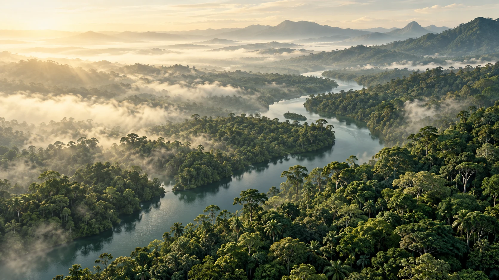
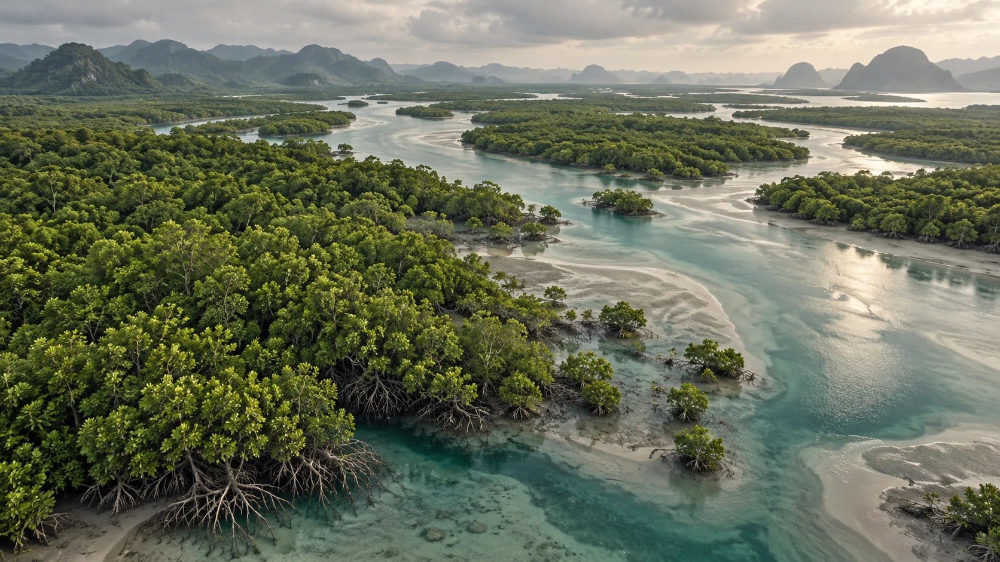
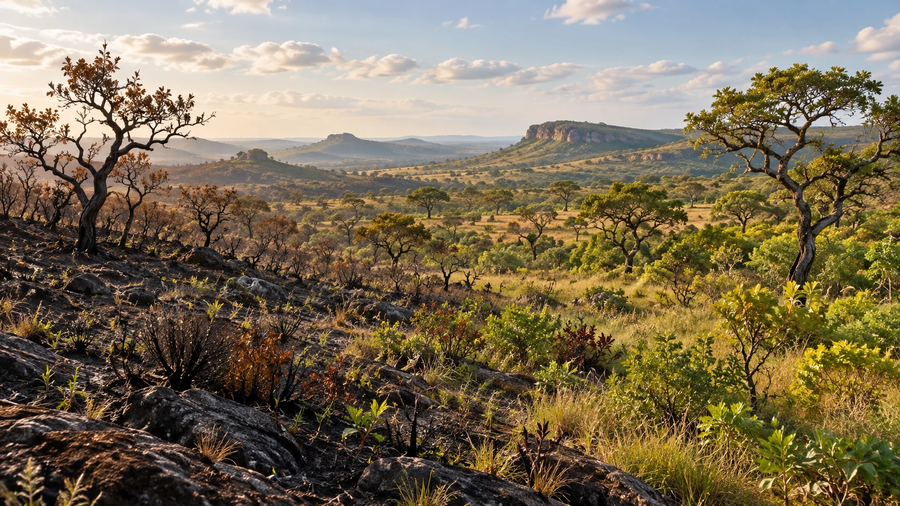
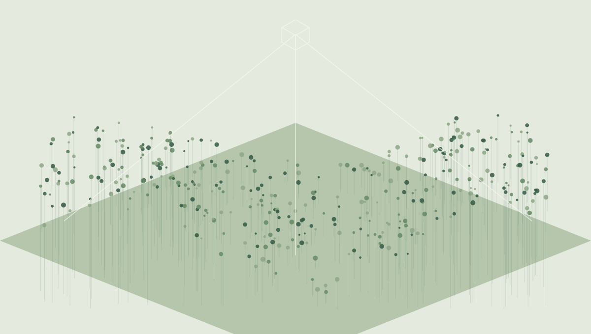

Projetos
Projetos de pesquisa financiados por agências nacionais e internacionais, com foco no balanço de carbono florestal, dinâmica do fogo, biodiversidade e restauração florestal nos biomas brasileiros.

Ilustrações conceituais de paisagens geradas por IA.
YBYRÁ-BR: Quantificação Espaço-temporal das Emissões e Remoções de CO₂ pelas Florestas Brasileiras
Projeto central do laboratório, focado no balanço de carbono das florestas brasileiras. Utiliza pipelines no Google Earth Engine integrando dados de desmatamento, fogo, degradação e florestas secundárias (MapBiomas Coleção 10.1) em todos os biomas brasileiros para quantificar emissões e remoções anuais de CO₂.

Resiliência da Biodiversidade na Reserva Biológica do Gurupi, Fase II
Pesquisa ecológica de longa duração (PELD) com monitoramento de três tipos de cobertura vegetal — floresta conservada, regeneração pós-pasto e pós-fogo — combinados com variação topográfica (platô e baixada). Aborda trajetórias de recuperação, condições hidrológicas e participação comunitária.
Amazonian BioTechQuilombo — Biodiversidade Amazônica, Avaliação Tecnológica e Troca de Conhecimento com Quilombos
Pesquisa interdisciplinar integrando avaliação da biodiversidade amazônica, tecnologia geoespacial e coprodução de conhecimento com comunidades Quilombolas. Combina sensoriamento remoto com abordagens participativas para apoiar a conservação e a gestão territorial.
Habilitando a Restauração Florestal em Grande Escala e Resiliente ao Clima na Amazônia Oriental
Projeto focado na restauração florestal em grande escala no estado do Pará — que tem meta de restaurar 7,4 milhões de hectares até 2036. Orienta onde a restauração maximiza benefícios para o clima, as pessoas e a biodiversidade. Investiga ameaças do fogo à permanência da regeneração natural e codesenvolvida com partes interessadas locais.

MAP-Fire: Uma Plataforma de Gestão do Balanço de Carbono — Emissões pelo Fogo e Remoções por Florestas Secundárias para o Estado do Maranhão
Desenvolve um sistema de monitoramento da probabilidade de ocorrência de incêndios e do balanço de carbono entre emissões pelo fogo e remoções por florestas secundárias no Maranhão. O produto final é uma plataforma online aberta para visualização de dados de fogo, clima, biomassa, desmatamento e CO₂ em nível municipal.

Balanço das Emissões Brutas de CO₂ para o Estado do Maranhão
Fornece um balanço abrangente entre as emissões de CO₂ por desmatamento, fragmentação florestal e incêndios, e as remoções pelo crescimento de florestas secundárias para o estado do Maranhão (1985–2020). Integra produtos de sensoriamento remoto de ponta com dados de campo.
ARBOLES: Um Entendimento da Biodiversidade e Resiliência das Florestas LATAM baseado em Características Funcionais
Investiga a diversidade funcional e a resiliência ecológica das florestas latino-americanas usando sensoriamento remoto e dados de campo de características funcionais. Foca em como os traços medeiam as respostas dos ecossistemas a perturbações e mudanças climáticas em florestas tropicais e subtropicais.
Quantificação das Perdas de Estoques de Carbono Florestal devido ao Desmatamento e Fragmentação Florestal para o Estado do Maranhão
Quantifica as perdas espaço-temporais de carbono florestal impulsionadas pelo desmatamento e pelos efeitos de borda no Maranhão, integrando produtos de sensoriamento remoto com dados de inventário de campo nos biomas Amazônia e Cerrado.
Combate a Incêndios Florestais em Terras Indígenas Amazônicas pelo Espaço
Mapeou e analisou a dinâmica dos incêndios florestais dentro das Terras Indígenas Amazônicas usando dados satelitais de alta frequência, gerando inteligência para apoiar a prevenção de incêndios e o manejo territorial por comunidades indígenas e órgãos públicos.
Mapeamento da Fragmentação Florestal da Amazônia e das Florestas de Transição Amazônia-Cerrado
Gerou mapas de fragmentação florestal (1990–2021) para toda a floresta amazônica, incluindo a zona de transição Amazônia-Cerrado. Atualizou um banco de dados de campo remédindo árvores em três parcelas permanentes de 1 ha, e validou os mapas de fragmentação contra estimativas de campo de estoques de carbono.
Mapeamento de Queimadas na Amazônia com Dados MODIS e VIIRS
Desenvolveu e validou metodologias de mapeamento de área queimada para o bioma amazônico usando dados multi-sensor (MODIS MCD14ML, MOD45, VIIRS). Analisou frequência, intensidade e padrões espaciais de incêndios na Amazônia brasileira.